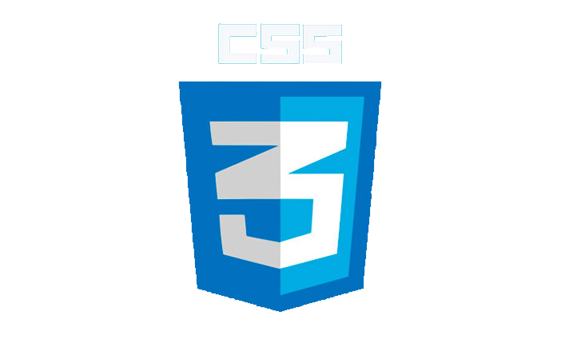
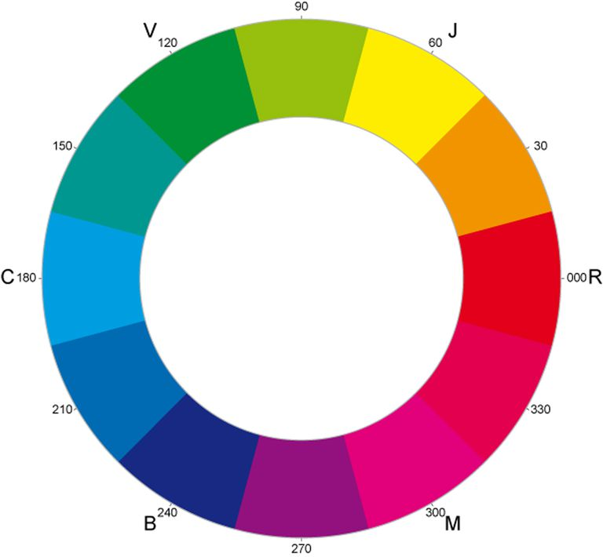

Presentación
de

Introdución
CSS "Cascade style sheet" es el lenguaje de hojas de estilo en cascada, creado para
apartar el diseño de la página de su contenido. El estandar de CSS3 esta bastante estable,
es mayormente soportado, pero no a tu totalidad.

Por ello y por posibles propiedades nuevas que esten en desarollo es recomendable utilizar estos prefijos
para cada navegador para asegurarse que funcionen lo mejor posible
- -moz- : Para Mozilla Firefox
- -webkit- : Para Chrome y Safari
- -o- : Para Opera
- -ms- : Para Internet Explorer a partir del 10
Una herramienta recomendada es CSS Prefixer
que desde un editor en linea hara compatibles nuestras hojas de estilo con los navegadores
Colores en RGBA y HSLA
RGBA
Funciona igual que el RGB pero con un cuarto valor que es la opacidad, que se establece con valor desde 1 siendo opaco hasta 0 siento totalmente transparante, ahorra tener que ponerla por separada
RGBA(144,144,144,0.75); Daria un color gris
HSLA
HSLA son las siglas de Hue (Matiz), Saturation (Saturación), Lightness(Luminosidad), Alpha(Opacidad) siendo estos los 4 valores que hay que darle
HSLA (305, 100%, 50%, 0.65) Daria un color Rosa

Bordes
Border-Radius
Border radius es la propiedad que redondea esquinas
Sintaxis
Border-radius: 30%
El resultado a mostrar seria el siguiente
Border-Shadow
Border Shadow permite aplicar sombras a nuestros elementos
Sintaxis
Box-Shadow: 7px 7px 5px 3px rgba(0,0,0,0.75);
Border-image
La propieda Border-image ter permite utilizar imagenes como borde de imagen
Sintaxis
Border-Image: url(imagenes/borde.png) 30 round;
Dando un resultado como este
Fondos
Background-Size
Esta propiedad te permite establecer las dimensiones de una imagen de fondo de el elemento marcado
Sintaxis
Background-size: auto (Para que se adapte a el tamaño maximo del tamaño de el elemento)
o establecer tu mismo las dimensiones
Background-Size: 400px 200px ( Ancho x Alto)
Background-Repeat
Esta propiedad especifica si el fondo se repetira o no, hasta cubrir todo el elemento
Sintaxis
Estan estos valores disponibles mas significativos
- Repeat : Se repetira hasta llenarlo todo
- Repeat-X : Se repetira de forma horizontal
- Repeat-Y : Se repetira de forma vertital
- No-Repeat : No se repite
Este fondo no se repite
Este fondo si se repite
Multiples Fondos
CSS3 da la posibilidad de establecer fondos multiples en los elementos usando estas 4 propiedades
- Background-Size (Ya explicado)
- Background-Origin
- Background-Clip
- Background-Position
Background-Origin
Esta propiedad establece desde donde empieza la imagen de fondo
Background-Clip
Establece hasta donde se extiende el elemento
Ambos coinciden en las mismos atributos
- Padding-Box : Empieza desde el padding o se extiende hasta el
- Border-Box : Empieza desde el borde o se extiende hasta el
- Content-Box : Empieza desde el contenido o se extiende hasta el
Este es el contenido
Background-Position
Define la posición de el fondo
Sintaxis
Background-Position: 200px 400px ,
o bien utilizar los los valores [ left | right | top | bottom| center ] por ejemplo:
Background-Position: center top;
Degradados y Gradientes
Los degradados son un efecto de "Transicion" de color , de forma estatica
Degradados Lineales
Los degradados funcionan como un color, en el sentido de que son aplicados en propiedades como por ejemplo Background
Sintaxis
Background: linear-grandient (blue, aqua);
Tambien es posible definir la direción del degradado con los los atributos
To right|left|bottom|top
El mismo ejemplo alpicandole una dirección
background: linear-gradient(to bottom right, rgb(0,0,255), #592020);
o con grados, background: linear-gradient(-90deg, rgba(0,0,255,1), #FFFFFF);
Es posible darle varios colores
Background: linear-gradient(to bottom, aqua, #FFFFFF, rgb(0,0,255), rgba(0,0,0,1), purple );
Degradados Radiales
El funciona igual que los lineales pero dando una forma circular
Sintaxis
Background: radial-gradient(blue, aqua);
Tambien posible aplicarle varios colores, e incluso definir el tamaño que abarca el color
Background: radial-gradient(black 10%, aqua 15%, blue 55%);
Y aplicarle repetición
Background: repeating-radial-gradient(black, aqua 10%, blue 15%);
Efectos de texto
Text-Shadow
Como la propiedad anteriormente explicada, permite aplicarle sombras, pero en este caso a los textos
Sintaxis
Text-shadow: 15px 10px 5px #FF0000;
Daria este efecto
Word-Wrap
Permite una palabra larga "partirse" y bajarse al siguiente renglon
Sintaxis
Word-Wrap: break-word;
Word-Wrap: normal
Si alaaaaaaaaaaaaaaaaaaaaaaaaaaaaaaaaaaaaaaaaaaaaaaaaaaaaaaaaaaaaaaaaaaargas la palabra se ve el efecto
Word-Wrap: break-word
Si alaaaaaaaaaaaaaaaaaaaaaaaaaaaaaaaaaaaaaaaaaaaaaaaaaaaaaaaaaaaaaaaaaaargas la palabra se ve el efecto
Text-Overflow
Te permite limimtar la anterior poniendo automaticamente los puntos suspensivos
Sintaxis
Text-Overflow: ellipsis
Si alaaaaaaaaaaaaaaaaaaaaaaaaaaaaa aaaaaaaaaaaaaaaaaaaaaaaaaaaaaaaaaaargaaaaaaaaaaas la palabra se ve el efecto"..."
Text-Overflow: normal
Si alaaaaaaaaaaaaaaaaaaaaaaaaaaaaa aaaaaaaaaaaaaaaaaaaaaaaaaaaaaaaaaaargaaaaaaaaaaas la palabra se ve el efecto","
Transformaciones
Son efectos visuales
Scale
Aumenta el tamaño en escala indicada
Sintaxis
Transform: scaleX(2); Tranform; scaleY(.5)
o Transfrom: scale(2, .5)
Skew
Tuerce el elemento
Sintaxis
Transform: SkewX(30deg);
Transform: SkewY(15deg);
Rotate
Rota el elemento
Sintaxis
Transform: rotateZ(360deg)
Transform: rotateY(180deg)
Transfrom: rotateX(180deg)
Translate
Mueve el elemento
Sintaxis
Transform: translateX(80px) / Transfrom: TranslateY(100px)
Transfrom: translate(200px) / (-200px)
Tranform-Origin
Establece el centro de el elemento
Sintaxis
Transform.origin: left top; | Transform.origin: 0px 0px;
Transiciones
Son los efectos que se muestran mientras un elemento esta siendo cambiado de estilo
Sintaxis
Transition: 3s 1s width ease-in-out;
Tiene 4 paramaetros, que se pueden aplicar en la misma etiqueta como esta arriba o separado:
- Transition-Delay: El retraso
- Transition-Duration: La duración de la transición
- Transition-Property: La propiedad que queremos cambiar
- Transition-Timming-Function: "Define" la aceleración de la animación

Linear
Ease
Ease-In
Ease-Out
Ease-In-Out
Animaciones
Las animaciones son conjuntos de patrones guardados para luego ser usados, los crearemos con los llamados @keyframes
Sintaxis
@keyframes pruebayeso {
0% {transform: rotate(0deg) translate(0px,0px); background-color: red; border-radius: 0%;}
20%{transform: rotate(-360deg) translate(50px,50px); background-color: green; border-radius: 50%;}
40%{transform: rotate(0deg) translate(0px, -50px); background-color: aqua; border-radius: 0%;}
60%{transform: rotate(0deg) translate(0px, 100px); background-color: bisque; border-radius: 50%;}
80%{transform: rotate(0deg) translate(150px, 100px); background-color: deeppink; border-radius: 0%;}
100%{transform: rotate(180deg) translate(0px,0px); background-color: darkgoldenrod; border-radius: 0%;}
}
Asi se definiria una animación luego se pone asi
.animacion_prueba:hover{
animation: pruebayeso;
animation-duration: 6s;
animation-iteration-count: infinite;
}
Columnas Multiples
Te permite dividir el contenido en columnas
Sintaxis
Las propiedades van separadas
- Column-Count: 5 (En cuantas columnas se va a separar)
- Column-Gap: 50px (La separación que se deja entre las columnas)
- Column-Rule-Style: solid (Como es el estilo de la separación)
- Column-Rule-Width: 2px (El ancho de la anterior propiedad)
- Column-Rule-Color: tomato (El color de nuevo, de la barra)
O se pueden juntar las ultimas 3 de el estilo de la separación en 1
Column-Rule: 2px solid tomato;
El ácido siquímico o más comúnmente conocido como su forma aniónica el siquimato, es un intermediario bioquímico importante en plantas y microorganismos. Su nombre deriva de la flor del shikimi japonés (シキミ, Illicium anisatum), fuente natural del cual fue extraído por primera vez.
El ácido siquímico se puede extraer también del anís estrellado de la China o anís estrellado común (Illicium verum) y de las semillas de la planta liquidambar, abundante en toda América.
En la industria farmacéutica el ácido siquímico, obtenido del anís estrellado (Illicium verum), se utiliza para la producción del antiviral tamiflu (oseltamivir). Aunque el ácido siquímico está presente en muchos organismos autotrofos, también es un intermediario biosintético y generalmente se encuentra en concentraciones muy bajas.
Interfaz de Usuario
Resize
Te permite reescalar el tamaño de el elemento
Sintaxis
Resize: both (El usado en este ejemplo) | vertical | horizontal
Outline
Te permite establecer otro borde mas y especificar la distancia
Sintaxis
Outline: 5px solid green;
Outline-offset: 20px;
Responsividad
con
Media-Querys